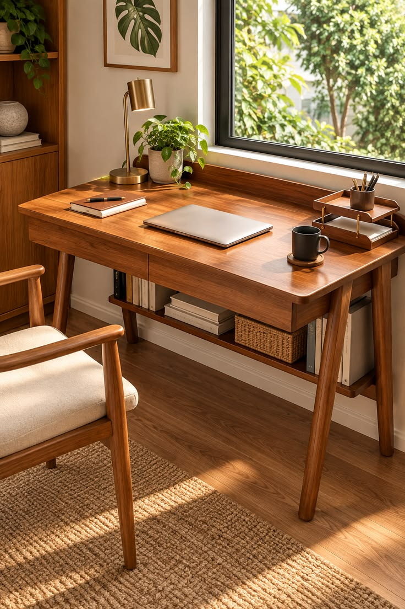

Learning journal
Learning Web Development One Project at a Time

Learning web development can feel overwhelming at first because there are many things to study. I learned that a better way to begin is to make one small project at a time.
Every project gives me a chance to practice one skill. Building consistently matters more than trying to understand everything in one day.
Why Small Projects Help
A small project has a clear goal, so it is easier to focus. Instead of only reading about HTML and CSS, I get to use them to make something that I can see in the browser.
Each Project Teaches One Main Skill
- Semantic HTML for clear page structure
- CSS Grid and Flexbox for layouts
- Responsive design for different screen sizes
- Accessibility practices for better user experiences
For example, I can use display: grid; when I need to
arrange images or cards into a flexible layout.
.gallery {
display: grid;
grid-template-columns: repeat(3, 1fr);
gap: 1rem;
}Learning by Building
“The best way to learn is to build something, make mistakes, and improve it.”
— A reminder I keep during my learning journey
I do not need every project to be perfect. I only need to understand what I made and improve a little with each new project. Progress becomes easier to notice when it is documented.
My Next Steps
I will continue building HTML and CSS projects, then move to JavaScript when I feel ready. I also want to learn more about UI/UX design so my websites can be both functional and thoughtful.
I use the roadmap.sh learning projects as practice ideas while I build my portfolio.